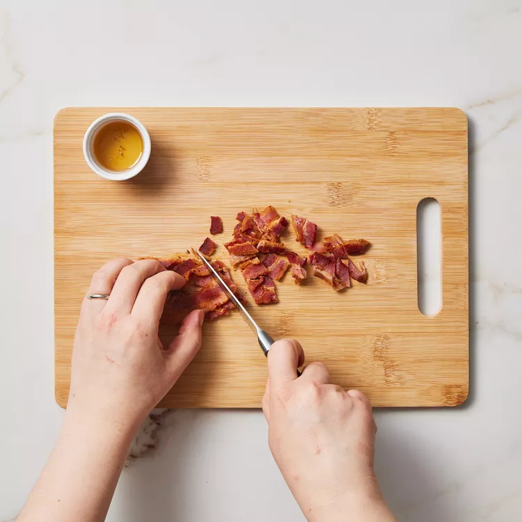

This Loaded Cabbage Salad Is a Side Dish You'll Make All Summer Long
This loaded cabbage salad features crisp chopped green cabbage tossed in a creamy dressing flavored with smoky bacon. We use bacon fat from the skillet to pump up the savory flavor in the dressing, but you can swap it out for oil if you prefer. While green cabbage holds up well in chopped salads, red cabbage or even napa cabbage can be used in its place.

Ingredients
- 3 slices bacon
- 1/4 cup sour cream
- 2 tablespoons mayonnaise
- 4 teaspoons rice vinegar
- 1/4 teaspoon ground pepper
- Pinch of salt
- 3 cups chopped green cabbage
- 1 cup shredded carrot
- 3 scallions, sliced
- 1/2 cup shredded sharp Cheddar cheese
Directions
Step 1
Cook bacon in a large skillet over medium heat until crisp, 5 to 7 minutes. Transfer to a paper-towel-lined plate. Reserve 1 tablespoon bacon fat; discard the rest. Chop the bacon when cool enough to handle.
Step 3
Whisk sour cream, mayonnaise, vinegar, pepper, salt and the reserved bacon fat together in a large bowl. Add cabbage, carrot and scallions; toss to coat. Stir in cheese and the chopped bacon.

Nutrition Facts (per serving)
207 Calories
17g Fat
6g Carbs
7g Protein